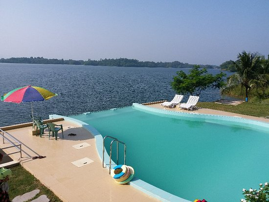
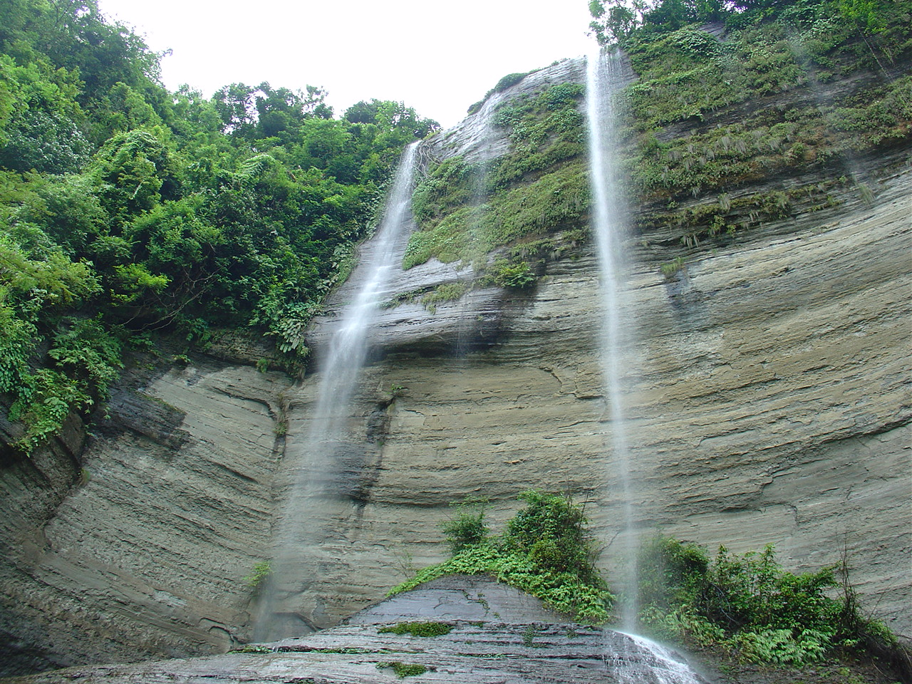

A place of absolute Serenity: Lakeshore Resort Kaptai
Many of my friends and relatives do not know that there is a very nice place to stay at Kaptai...if you donot find any standard place to stay at Rangamati you can easily stay there which is around 1 hour far from Rangamati town and the Kaptai-Rangamati link road itself is a journey to remember...to stay at this place you will need to give reference of any serving defense officers. Room cost is 4000+VAT ...you can enjoy private boat ride ..per hour BDT 600 ..however for large groups like 6-10 ppl..
Continue Reading

Shuvolong Waterfalls, Rangamati
Shuvalong Jhorna falls in Barkal upazila of Rangamati district. The clear water stream of this spring makes tremendous feel in the heart of tourists. The Shuvolong Waterfall water falls below 300 feet high in the rainy season, and is fascinated by tourists’ excursions. At present, some installations have been made by the upazila administration in this area. The distance from Rangamati to Shuvalong is only 25 kilometers. Rangamati’s beautiful beauty will be seen while going on the way to the pavement of the mountain....
Continue Reading